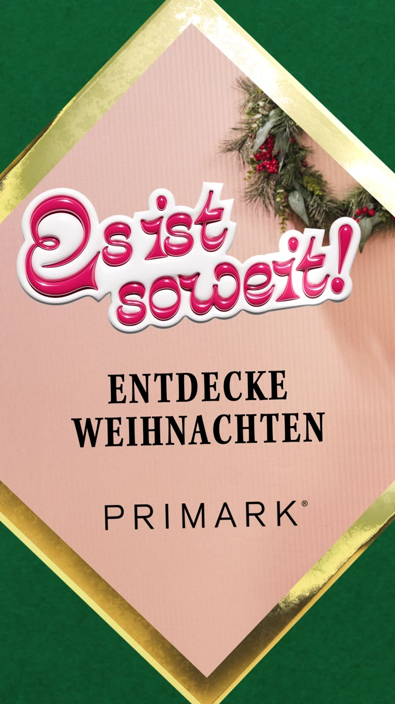

Divergent thinking as a deliverable, the same Christmas brief answered with two different creative personalities.
Year
2023
Industry
Fashion · Retail
Work
Motion Design, Edit, Social Adaptation
Format
9:16 · Meta · 10s
Every Christmas, Primark’s holiday campaign has to do two jobs at once: feel like the warm tradition people expect, and cut through a feed saturated with everyone else’s warmth.
01Objective
Own Christmas familiarity and stop thumbs in December’s most crowded feed, two goals that usually pull a campaign in opposite directions.
02Idea
Don’t pick a lane, build two. Route A leans classic comfort; Route B goes editorial and fashion-forward. Divergent thinking delivered as a shippable asset, not a mood board.
03Execution
Motion, edit and finishing of both routes’ 10-second 9:16 Meta cutdowns, each route’s personality kept intact at feed-first pacing.
04Result
Two live routes giving media two genuinely different bets on the same brief, creativity structured so performance data could pick the winner.
Watch them side by side, same season, same brand, two completely different bets on what stops a thumb in December.
Ten seconds, three acts, how the traditional route builds its little story.
